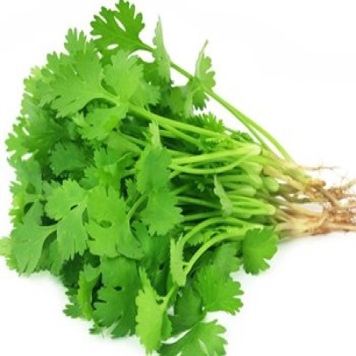

कोथिंबीर विषयी माहिती

प्रस्तावना :
कोथिंबीरीची लागवड भारतातील बहुतेक सर्व राज्यात केली जाते. कोथिंबीरीच्या विशिष्ट स्वादयुक्त पानांसाठी
कोथिंबीरीला वर्षभर मागणी असते.
मात्र कोथिंबीरीची लागवड प्रामुख्याने खरीप आणि रब्बी हंगामात केली जाते.
उन्हाळी हंगामात कोथिंबीरीचे उत्पादन कमी असले तरी मागणी मात्र भरपूर असते. त्यामुळे कोथिंबीरीच्या लागवडीस
चांगला वाव आहे.
कोथिंबीर ही रोजच्या आहारात वापरली जाणारी महत्वाची पालेभाजी आहे. कोथिंबीरीच्या विशिष्ठ स्वादयुक्त पानावर इतर
भाज्यांचा स्वाद वाढविण्यासाठी शाकाहारी तरी मांसाहारी पदार्थामध्ये कोथिंबीरीचा वापर करण्यात येतो.
कोथिंबीरीच्या वडया चटणी आणि कोशिंबीर लोकप्रिय आहे.
हवामान आणि जमीन :
कोथिंबीरीची लागवड कोणत्याही प्रकारच्या हवामानात करता येते त्यामुळे अतिपावसाचा प्रदेश वगळता महाराष्ट्रातील
हवामानात वर्षभर कोथिंबीरीची लागवड करता येते.
उन्हाळयात तापमान 36 अंश सेल्सिअसच्या वर गेल्यास कोथिंबीरीची वाढ
कमी होते. कोथिंबीरीच्या पिकासाठी मध्यम कसदार आणि मध्यम खोलीची जमिन निवडावी. सेंद्रिय खते भरपूर प्रमाणात
असल्यास हलक्या किंवा भारी जमिनीत कोथिंबीरीचे पिक चांगले येते.
सुधारीत जाती :
नंबर 65 टी 5365 एनपीजे 16 व्ही 1 व्ही 2 आणि को-1, डी-92 डी-94 जे 214 के 45 या कोथिंबीरीच्या स्थानिक आणि
सुधारित जाती आहेत.
लागवडीचा हंगाम :
कोथिंबीरीची खरीप, रब्बी आणि उन्हाळी अश तीनही हंगामात लागवड करतात. उन्हाळी हंगामात एप्रिल ते मे महिन्यात
कोथिंबीरीचे उत्पादन घ्यावे.
लागवड पध्दती :
कोथिंबीरीच्या लागवडीसाठी शेत उभे-आडवे नांगरुन चांगले भुसभुशीत करून 3×2 मिटर आकाराचे सपाट वाफे बांधून घ्यावे.
प्रत्येक वाफयात 8 ते 10 किलो चांगली कुजलेली शेणखत टाकून मिसळून घ्यावे.
वाफे सपाट करुन बी सारखे पडेल या
बेताने फेकून पेरावे. बी खत मातीने झाकून हलके पाणी द्यावे.
तणांचा प्रार्दुभाव जास्त प्रमाणात होत असल्यास सपाट
वाफयांमध्ये 15 ते 20 सेमी अंतरावर खुरप्याने उथळ ओळी पाडून बी पेरावे आणि नंतर मातीने झाकून घ्यावे. उन्हाळी
हंगामात पेरणीपुर्वी वाफे चांगले भिजवून घ्यावे. आणि वाफसा आल्यावर बियाणे पेरावे. कोथिंबीरीच्या लागवडीसाठी
हेक्टरी 60 ते 80 किलो बी लागते.
पेरणीपूर्वी बियाण्यांवर चांगली उगवण होण्यासाठी प्रक्रिया करणे आवश्यक आहे.
पेरणीपूर्वी धने फोडून बिया वेगळया कराव्यात यासाठी धने चपलेने अथवा लाकडी फळीने रगडून बी वेगळे करावे. तसेच
पेरणीपूर्वी धन्याचे बी 12 तास पाण्यात उबदार जागी ठेवावे आणि नंतर लागवडीसाठी वापरावे.
त्यामुळे उगवण 15 ते 20
दिवसा ऐवजी 8 ते 10 दिवसात होवून कोथिंबीरीच्या उत्पादनात वाढ होते आणि काढणी लवकर होण्यास मदत होते.
खते आणि पाणी व्यवस्थापन :
कोथिंबीरीच्या पिकाच्या चांगल्या आणि जोमदार वाढीसाठी बी पेरताना हेक्टरी 35 ते 40 गाडया शेणखत जमिनीत मिसळून
द्यावे. कोथिंबीरीच्या पिकाला पेरणीच्या वेळी 50 किलो 15-5-5 हे मिश्रखत द्यावे.
बी उगवून आल्यावर 20-25
दिवसांनी हेक्टरी 40 किलो नत्र द्यावे. कोथिंबीरीचा खोडवा घ्यावयाचा असल्यास कापणीनंतर हेक्टरी 40 किलो नत्र
द्यावे.
कोथिंबीरीला नियमित पाणी देणे आवश्यक आहे. सुरूवातीच्या काळात बियांची उगवण होण्यापूर्वी वाफयाला पाणी देताना
वाफयाच्या कडेने वाळलेले गवत किंवा उसाचे पाचट लावावे.
किड व रोग :
कोथिंबीरीवर फारसे रोग आणि किडी दिसून येत नाही. काही वेळा मर रोगाचा प्रार्दूभाव होतो. भुरी रोगाच्या
नियंत्रणासाठी लांम सी एस-6 सारख्या भुरी प्रतिबंधक जातीचा वापर करावा. आणि पाण्यात विरघळणारे गंधक वापरावे.
काढणी उत्पादन आणि विक्री :
पेरणीपासून दोन महिन्यांनी कोथिंबीरीला फुले येण्यास सुरुवात होते. म्हणून त्यापूर्वी हिरवीगार आणि कोवळी
लुसलुशीत असतानां कोथिंबीरीची काढणी करावी.
साधारणपणे 15 ते 20 सेमी उंच वाढलेली परंतु फुले येण्यापूर्वी
कोथिंबीर उपटून अथवा कापून काढणी करावी. नंतर कोथिंबीरीच्या जुडया बांधून गोणपाटात किंवा बांबूच्या
टोपल्यांमध्ये व्यवस्थीत रचून बाजारात विक्रीसाठी पाठवावी.
पावसाळी आणि हिवाळी हंगामात कोथिंबीरीचे हेक्टरी 10
ते 15 टन उत्पादन मिळते तर उन्हाळी हंगामात 6 ते 8 टन उत्पादन मिळते.
1/116